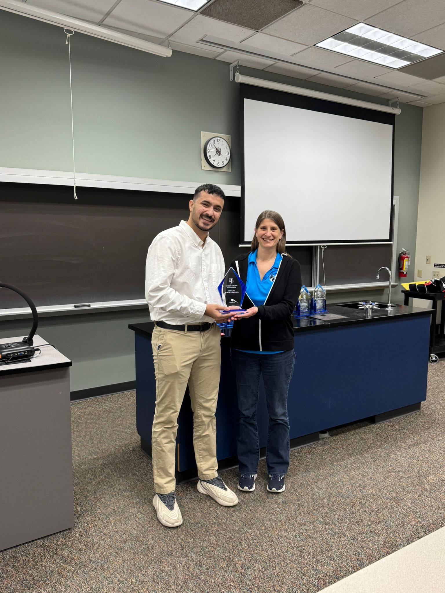
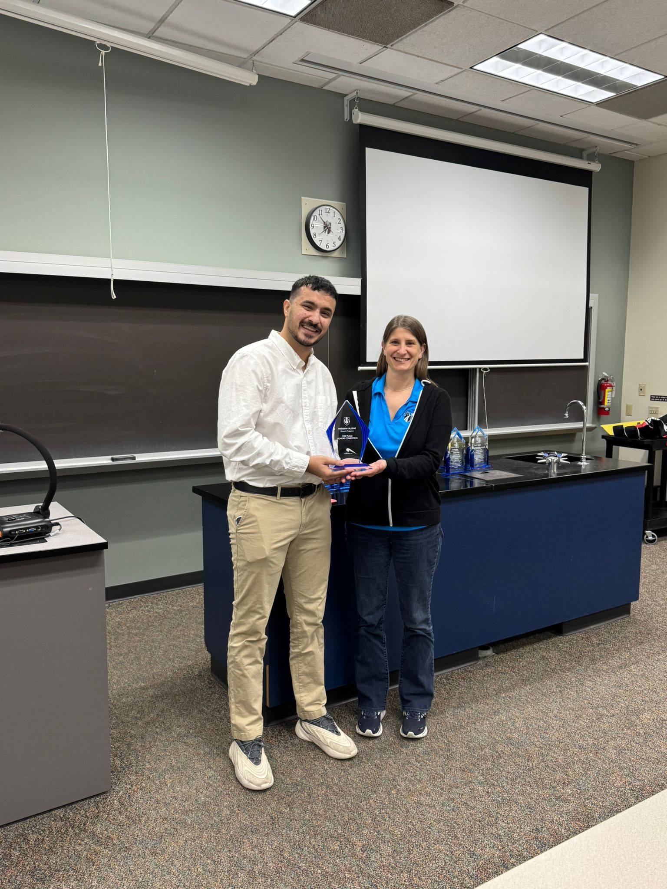

Sip Success Online
Sip Success Online is the first honors project I created as part of my IT Web Software Development studies at Madison College. It is a static website built for my bubble tea business in the Philippines, with the mission of making small business websites more accessible and culturally inclusive.
The inspiration came during a UX design class when a visually impaired speaker, Mr. Denham, shared his challenges navigating the web. That talk shifted my focus toward accessibility and digital equality.
I built the site using HTML, CSS, ARIA labels, and tested it with tools like WAVE and Lighthouse. I solved the issue of form handling on a static site using Formspree, which enabled direct feedback submissions.
I also tailored the content for a Filipino audience by integrating local currency and culturally appropriate design. As a Turkish student, balancing cultural awareness with web accessibility was a rewarding challenge.
The project won 1st Place in the Fall 2024 Honors Project Competition. I had promised my mentor, Temple Chestnut, that we’d reach the top—and I kept that promise.
This experience became the foundation for my invitation to present at the 2025 Upper Midwest Honors Conference.